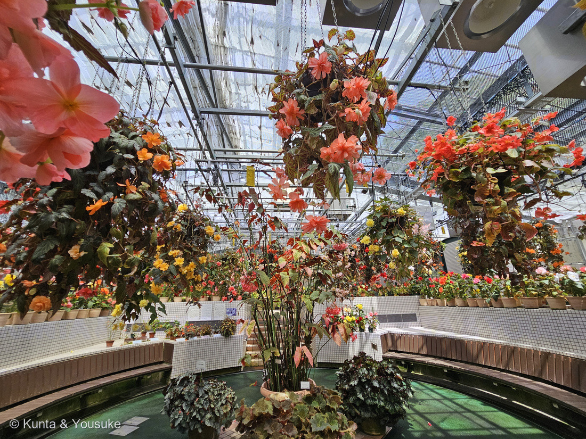
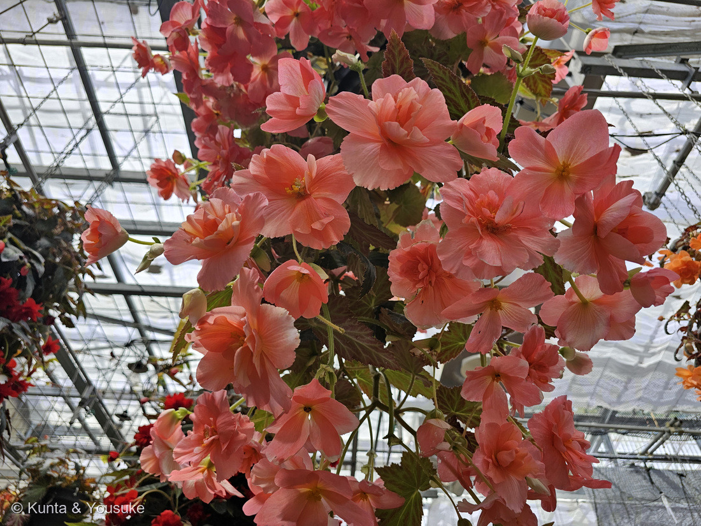
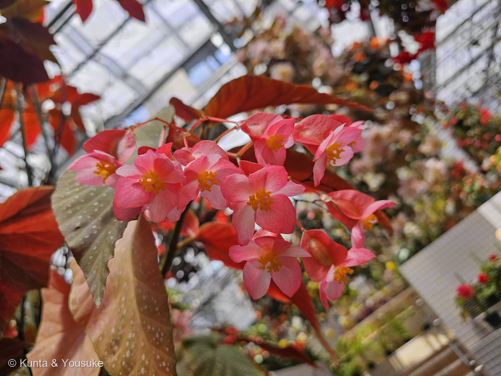
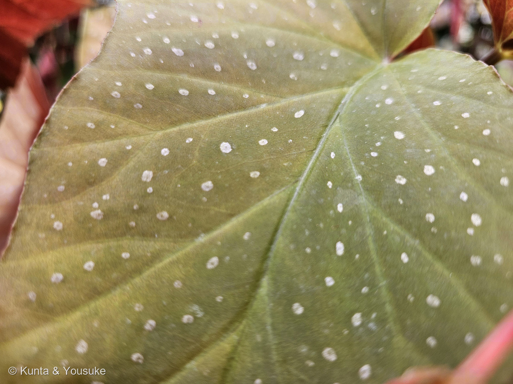
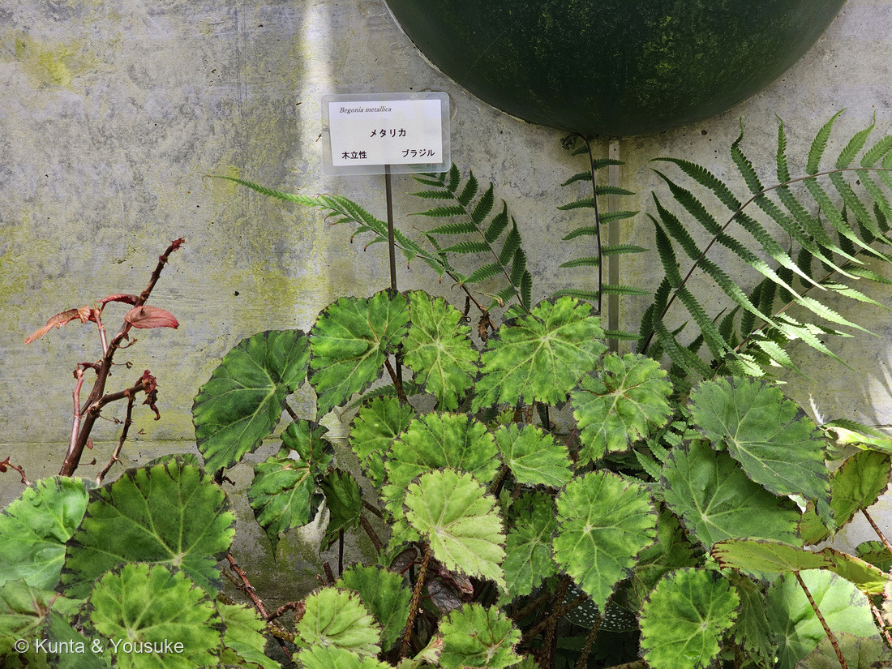
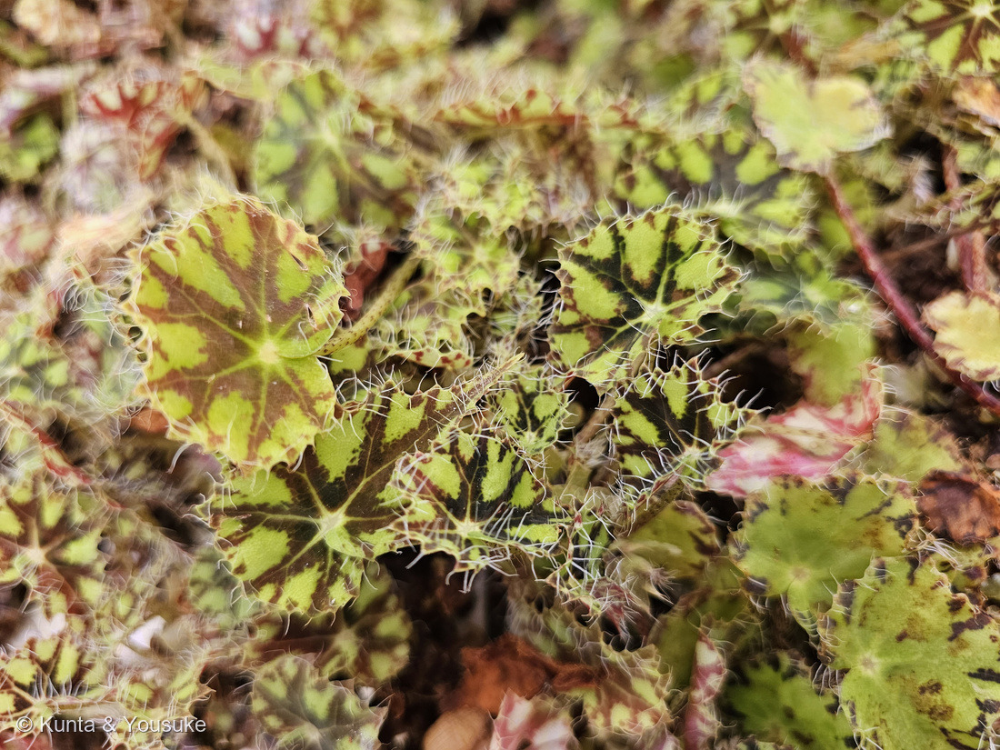

地図を読み込んでいるよ…
🔍 写真も地図も、押しているあいだ拡大して見られるよ（スマホは指を置いてすこし待ってね）。
🌍 の地図＝この子がもともと自生している場所を緑に。オーストラリアを除く世界の熱帯・亜熱帯。原種の数は、広島市植物公園の解説板が「1500種余り」、英語版Wikipediaが「2,000種以上」とし、被子植物でもっとも大きな属のひとつ。アフリカが起源の中心とされる（英語版Wikipedia）。日本に自生するベゴニア属は、八重山のコウトウシュウカイドウとマルヤマシュウカイドウの2種だけで、シュウカイドウは外来（日本語版Wikipedia）。
⭐この緑は「ベゴニア属ぜんたいのふるさと」だよ——このページは属のページなので、一株ごとの原産ではなく、なかま全体の分布を塗ってある。⭐⭐広島市植物公園の解説板は「オーストラリアを除く世界の熱帯と亜熱帯地域に1500種余りの原種が分布しています」とし、英語版Wikipediaは「2,000種以上」「アフリカが起源の中心」とする。⭐⭐⭐だからこの地図でいちばん見てほしいのは、緑の「すきま」のほう＝⚠オーストラリアが塗られていない。熱帯・亜熱帯ならどこにでもいるのに、あの大陸にだけいないんだ。⭐園の地図では、種がいちばん多いのは中米と南米北部（101種以上）、つぎに中国（51〜100種）。⭐⭐日本で塗ってあるのは沖縄県だけ——日本に自生するベゴニアは、八重山諸島（石垣島・西表島・与那国島）のコウトウシュウカイドウと、マルヤマシュウカイドウの2種だけだから（日本語版Wikipedia）。⚠県より細かくは塗れないので、沖縄県まるごとが緑になっているけれど、ほんとうは八重山の島々だけだよ。⚠そしてこのページの写真の子たちは、この緑のどこか（メタリカ＝ブラジル、ボウエレ・ニグラマルガ＝メキシコ）から来て、広島の温室で暮らしている。⭐おまけのシュウカイドウは中国原産で、江戸時代に日本へ来た外来種（三河の植物観察）。
⚠ 地図は国（日本と中国だけ県・省）までしか塗れないから、ほんとうの分布より広く見えていることがあるよ。地図はだいたいの場所。正確なところは、上の文を見てね。
ベゴニア
Begonia spp.（ベゴニア属）
シュウカイドウ属／⭐このページのうち2枚は園のラベルで種まで確定＝Begonia metallica W.G.Sm.（メタリカ）・Begonia bowerae var. nigramarga Ziesenh.（ボウエレ・ニグラマルガ）
シュウカイドウ科 · Begoniaceae（ベゴニア属）── 図鑑ではじめてのシュウカイドウ科＝84科目。207ヘチマと同じウリ目
燻太さんの一言「この子達は交配種から原種まで、ひとまとめの温室で育てられているみたい。一株ずつ載せてあげたいけれど、そうするとこの図鑑がベゴニア図鑑になっちゃうね」──だから、この一枚を「ベゴニア属の部屋」にしたよ
⭐⭐⭐ 名前と学名の由来 ── 植物学者じゃない人の名前が、2000種に残った
⭐ Begonia という名前は、ミシェル・ベゴン（Michel Bégon・1638〜1710）というフランス人からもらったもの。日本語版Wikipediaは、こう書いている。
「フランス領アンティル諸島の総督であり、植物採集者プリュミエを推薦した人物」
⭐⭐ そして、名づけたのはベゴン本人ではない。——シャルル・プリュミエ（Charles Plumier）が、1700年に出した本のなかで、アンティル諸島で見つけた6種を「ベゴニア属」として紹介した（同）。⭐英語版Wikipediaも「プリュミエが、アンティルで6つの新種を見つけたあと、ミシェル・ベゴンをたたえて Begonia と名づけた」としている。
⭐⭐⭐ ここが、ぼくには面白かった。ベゴンは植物学者じゃないんだ。⭐植物を採りに行く人を、送り出したほう。——⭐⭐それなのに、その名前が、いまでは1500〜2000種ぜんぶの頭についている。⭐プリュミエが見た6種が、300年かけて2000種になった。
- 和名の「ベゴニア」は、属名をそのまま読んだもの。
- ⭐⭐でも科の和名は「シュウカイドウ科」——⭐日本で古くから知られていたシュウカイドウ（秋海棠）のほうから、科の名前をもらっている。⭐外から来た属名と、昔からの和名が、上下で同居しているんだね。
- metallica は「金属の」。⭐葉に金属みたいなつやがあるから（写真⑤）。
- nigramarga は「黒い縁」と読める（niger＝黒い＋margo＝縁）。⚠この語源をはっきり書いた出典には当たれなかったので、ぼくの読みだよ。⭐でも写真⑥を見ると、葉のふちと葉脈にそって、ほんとうに黒い模様が入っている。
この植物のこと ── オーストラリアを除く、世界じゅう
- シュウカイドウ科ベゴニア属。⭐図鑑ではじめてのシュウカイドウ科＝84科目。⭐⭐そして、目でいうと207 ヘチマとおなじウリ目——⚠あのヘチマは「ベゴニアの温室のそば」で会った子だった。⭐となりにいたのに、じつは親戚だったんだ。
- 原種の数は、出典で数字がちがう。⭐広島市植物公園の解説板は「オーストラリアを除く世界の熱帯と亜熱帯地域に1500種余りの原種が分布しています」、⭐英語版Wikipediaは「2,000種以上」で「被子植物でもっとも大きな属のひとつ」とする。⭐どちらにしても、けたはずれに大きな一族。
- ⭐⭐「オーストラリアを除く」がおもしろい。——熱帯・亜熱帯ならどこにでもいるのに、あの大陸にだけいない。
- 起源の中心はアフリカとされる（英語版Wikipedia）。⚠種がいちばん多いのは中南米（園の地図では中米と南米北部が「101種以上」）。
- ⭐⭐⭐日本に自生しているベゴニアは、たった2種。——コウトウシュウカイドウ（Begonia fenicis Merr.）とマルヤマシュウカイドウだけ（日本語版Wikipedia）。コウトウシュウカイドウは沖縄県八重山諸島の石垣島・西表島・与那国島で、「森林内の渓流沿いの岩の上に生える」（同）。⭐おまけのシュウカイドウは、じつは外来種なんだ。
⭐⭐⭐ 三つの体つき ── 木立性・根茎性・球根性


⭐ 園がラベルで名前を教えてくれた2人。ボタンで切りかえてね——片方はブラジルの木立性、もう片方はメキシコの根茎性（番号は上のギャラリーからのつづき）。
⭐ 広島市植物公園の解説板「ベゴニアの分類」は、こう言っている。
「茎や根の形により、木立性ベゴニア、根茎性ベゴニア、球根性ベゴニアの3つに大別されます」
そして、その3つを板はこう絵で説明していた。
- 木立性（こだちせい） ── ⭐茎がまっすぐ立ち上がる
- 根茎性（こんけいせい） ── ⭐茎が地面をはって伸びる
- 球根性（きゅうこんせい） ── ⭐土の中に球根をつくる
⭐⭐⭐ 燻太さんが撮ってきた写真、この3つが全部そろっているんだ。
- 木立性 ── 写真⑤ メタリカ（園のラベル「メタリカ／木立性／ブラジル」）、そして写真③④の斑点の子
- 根茎性 ── 写真⑥ ボウエレ・ニグラマルガ（園のラベル「ボウエレ・ニグラマルガ／根茎性／メキシコ」）
- 球根性 ── 写真①② ハンギングの八重
⭐ 同じ属なのに、体の作りがまるでちがう。⭐⭐木立性は柱のように立ち、根茎性は地面をはい、球根性は土の中に球根をしまう。
⚠ 球根性だけは、休む。——園には「球根ベゴニアの栽培」という工程の掲示があって、「開花」のあとに「休眠」、そしてまた「休眠を破る」と書いてあった。⭐①②のあの花ざかりは、一年のうちの、いちばん派手なひとときなんだね。
⭐⭐⭐ 葉が左右非対称 ── だから花言葉が「片思い」になった
⭐ この属に共通する、いちばん大きな特徴。園の解説板「ベゴニアの特徴」は、こう始まる。
「ベゴニアに共通してみられる大きな特徴は、葉の主脈を中心にして左右の大きさが異なっていることです」
⭐⭐ 写真④を見てほしいんだ。——右上のくぼんだところが、葉柄のつく場所。⭐そこから葉脈が放射状に広がっているでしょう。⭐⭐その中心線をはさんで、左側のほうが、右側よりずっと大きい。
⭐⭐⭐ そして板は、そのすぐあとにこう続ける。
「このことに由来したのでしょうか、『秋海棠 その葉が何を 片思い』と詠われていますし、花言葉は、『片思い』ともいわれています」
⭐ 葉のかたちが、そのまま花言葉になった。——⭐⭐ゆがんだハート。片方だけが大きいハート。
⚠ この句の作者は板に書かれていなくて、ぼくも出典にたどりつけなかった。⭐だから「園の解説板が引いている句」として紹介しておくね。
⭐⭐⭐ 白い斑点の正体は、色素じゃなくて「空気」
⭐ 写真④の白い水玉。——ぼくはずっと、白い色素が入っているんだと思っていた。⭐⭐ちがうんだ。
Sheue らの2012年の論文〔Annals of Botany 109巻6号 1065〜1074ページ〕が、ベゴニア6種＋1品種の葉を顕微鏡で調べて、こう結論している。
「Intercellular space above the chlorenchyma is the mechanism of variegation in these Begonia.（これらのベゴニアで斑を作っているのは、緑の組織の上にある細胞のすきまである）」
⭐⭐⭐ つまり、白いところの下には空気の層がある。しくみはこう。
- ⭐細胞の中の屈折率は 1.425、空気は 1（論文が Gausman ら1974 から引いている数字）。
- ⭐⭐この差があると、細胞と空気のさかいめに斜めから入った光は、はねかえされる。
- ⭐⭐⭐論文はその角度まで出している ── arcsin(1 ÷ 1.425) ＝ 44.6度。これより寝た角度で当たった光は、まるごと反射する（全反射）。
- たくさんの光がはねかえるから、そこが白く光って見える。⭐論文はこれを「physical colour（物理的な色）」と呼んでいる。
⭐⭐ 色を塗ったんじゃなくて、光を返しているんだ。
⭐⭐⭐ そして、いちばん感心したのはここ。——論文は「明るいところ」と「緑のところ」で光合成の最大量子収率をくらべて、有意な差がなかったと報告している（「The maximum quantum yield did not differ significantly between these areas, suggesting minimal loss of function with variegation」）。⭐白く見えても、その下でちゃんと光合成をしている。⚠斑入りのフィカスのほうは、明るい部分に葉緑体がなくて量子収率がとても低かった、とも書いてある——⭐同じ「斑入り」でも、中身がまったくちがう。
⭐⭐ もうひとつ、論文にこう書いてある ── 「these areas do not include primary veins（明るい部分は主脈を含まない）」。⭐⭐⭐写真④をもう一度見てほしい。白い点は、太い葉脈の上をきれいによけている。⭐論文に書いてあることが、燻太さんの写真にそのまま写っていた。
⚠ 正直に書いておくね。——この論文が調べたのは B. chlorosticta・B. diadema・B. formosana・B. hemsleyana・B. pustulata・B. versicolor の6種と1品種で、写真④の株はその中に入っていない。⭐だから「この子もそうだ」とは言い切れない。⭐⭐でも、ベゴニア属で白い模様を作るしくみとして分かっているのは、いまのところこれだよ。
⭐ この図鑑には、似た子がもう一人いる。——091 アカメガシワの燃えるような赤い新芽。⭐あれも色素じゃなくて、星形の毛がびっしり生えた表面の色だった。⭐⭐アカメガシワは「毛」で、ベゴニアは「空気」。⭐⭐⭐どちらも、色素なしで色を作っている。
同定について ── どこまで決めて、どこで止めたか
⭐⭐ 燻太さんの言うとおり、一株ずつ登録したら、この図鑑がベゴニア図鑑になってしまう。⭐だからこのページは「ベゴニア属」で一枚建てて、ここに少しずつ足していくことにしたよ。
- ⭐種まで決めたのは2枚だけ。——写真⑤「メタリカ」＝Begonia metallica、写真⑥「ボウエレ・ニグラマルガ」＝Begonia bowerae var. nigramarga。⭐どちらも園のラベルに学名まで印刷してあった。⭐園が名前を教えてくれたのは、これで7人目。
- ⚠写真①②③④は、種を決めていない。——⭐この温室は、原種も交配種もひとまとめに育てられていて、ラベルの写っていない株を写真から決めることはできない（203で「園の交配実生かもしれない」と止めたのと同じ理由）。
- ② ハンギングの八重の大輪 ── ⭐球根ベゴニアのなかま、というところまで。園に「球根ベゴニアの栽培」の掲示があった。
- ③④ 茎が立ち上がり、葉に白い斑点、葉裏が赤い ── ⭐木立性のなかま、というところまで。⭐園の「ベゴニアの特徴」の板は、葉の形を8つに分けていて、そのひとつ「エンゼルウィング形」の例にシラボシベゴニアを挙げている。⚠シラボシベゴニア（白星ベゴニア）は Begonia maculata の和名だけれど、この株のラベルは撮れていないので、そこまでは言わないでおくね。
- ⚠園の解説板と名札の写真は、公開していない。⭐出典として引くだけにしてある（200で決めたルール）。
⭐⭐ 花のはなし ── 雄花が先で、雌花があと
⭐ ベゴニアは、ひとつの株に雄花と雌花が別々につく（雌雄異花・同株）。そして園の板は、その並び順まで説明していた。
「初め、雄花がつき、枝分かれするに従って雌花がつくようになり、最後には雌花だけの大きな花房となる」
⭐⭐ 花被片（花びらに見えるもの）の数は、出典でちがう。
- 日本語版Wikipedia ── 「大抵の種は雄花は4枚、雌花は5枚」
- 三河の植物観察のシュウカイドウ ── 雄花は「花被片は4枚」、雌花は「花被片は3枚」
⭐雄花が4枚なのは、両方で一致している。⚠雌花のほうは食いちがっているので、両方書いておくね。
⭐⭐⭐ さて、写真③。——ぶら下がった花房の花を数えると、どれも幅の広い2枚＋細い2枚＝4枚。まん中に、こまかい黄色いかたまり。⭐これは雄花だね。
⭐⭐ でも、花房のまん中あたりに、ひとつだけちがう子がいる。——ピンクの花被片のうしろに、縦のすじが入ったふくらみがついている。⭐⭐⭐これが、翼のついた子房。三河はシュウカイドウの子房を「子房は無毛、3室、三角状の大きな翼をつける」と書いていて、実（蒴果）には「不均等な3翼がある」。⚠写真からの読みなので断定はしないけれど、位置も形もそれらしいよ。
⭐⭐ そして、その子房は花の下についている。——⭐子房下位だね。⭐⭐⭐これ、207 ヘチマや090 キュウリとまったく同じ。——⚠そう、この3人は同じウリ目なんだ。⭐離れて見えて、同じ作りをしている。
参考：Wikipedia・ベゴニア（フランス人ミシェル・ベゴン(1638-1710)／フランス領アンティル諸島の総督であり、植物採集者プリュミエを推薦した人物／シャルル・プリュミエが1700年に出版された書物の中で6種をベゴニア属として紹介／花は雌雄別であり大抵の種は雄花は4枚、雌花は5枚の花びらをもつ／葉の形が左右非対称でややゆがんだ形／木立性・根茎性・球根性の3大分類）／Wikipedia (English)・Begonia（With 2,000+ species, Begonia is one of the largest genera of flowering plants／distributed primarily across tropical and subtropical regions of Africa, Asia, and Central and South America, with Africa considered the center of origin／The genus name Begonia was coined by Charles Plumier, a French monk and botanist after discovering six new species in the Antilles, which he named Begonia to honor Michel Bégon／monoecious, with unisexual male and female flowers occurring separately on the same plant／leaves are usually asymmetric such that their left side and right side are different sizes）／Sheue C-R, Pao S-H, Chien L-F, Chesson P, Peng C-I (2012) Natural foliar variegation without costs? The case of Begonia. Annals of Botany 109(6): 1065-1074（Intercellular space above the chlorenchyma is the mechanism of variegation in these Begonia／the refractive index inside a cell (ncell = 1.425) (Gausman et al., 1974) is higher than that of the intercellular space (nair = 1)／arcsin(nair/ncell) = 44.6°, it will be completely reflected ('total internal reflection')／This light coloration is a form of physical colour／The maximum quantum yield did not differ significantly between these areas, suggesting minimal loss of function with variegation／these areas do not include primary veins）／三河の植物観察・シュウカイドウ（Begonia grandis Dryand.／シュウカイドウ科 Begoniaceae ベゴニア属／帰化種 中国、マレーシア原産／江戸時代に園芸用に中国から渡来した／高さ28〜60㎝／左右非相称な歪な広卵形、長さ10〜20㎝×幅7〜14㎝／花後、葉腋にむかご(珠芽)をつける／雄花の花被片は4枚、雌花の花被片は3枚／子房は無毛、3室、三角状の大きな翼をつける／蒴果は不均等な3翼がある／花がカイドウに似て、秋咲くことから）／Wikipedia・コウトウシュウカイドウ（Begonia fenicis Merr.／沖縄県八重山諸島の石垣島と西表島、与那国島に生育する／森林内の渓流沿いの岩の上に生える／根茎は横に這い、根を下ろし、葉をつける／日本の自生ベゴニア属は本種とマルヤマシュウカイドウのみ）／American Begonia Society・Begonia metallica（W.G. Smith, Floral Magazine (London) 1876／Brazilian species／This shrub-like species has sturdy, but thin, erect stems／iridescent and embossed silk／having the shininess of polished metal／dark green with red veins underneath）／Wikipedia (English)・Begonia bowerae（the eyelash begonia, native to Oaxaca and Chiapas states of Mexico／named by Rudolf Christian Ziesenhenne／rhizomatous）／⭐広島市植物公園の解説板「ベゴニア」「ベゴニアの特徴」「ベゴニアの分類」「ベゴニアの多様な姿」「球根ベゴニアの栽培」、および園の名札（⚠掲示物なので写真は公開せず、出典として引くだけにしてある。「ベゴニアの特徴」の板には「出典；植村猶行（1994）より一部改変」とあった）
花言葉
- 日本で
- 片想い／愛の告白／親切／幸福な日々（赤いベゴニア＝公平、白いベゴニア＝親切）。
- 英語圏
- Greenaway 1884 に、ベゴニアは載っていない。原文を検索して確かめたよ
なぜ、そうなったか：⭐この花言葉は、この属の体そのものから来ている。花言葉-由来は「片想い」について「葉の形がゆがんだハート形であることに由来するといわれます」と書いている。
⭐⭐そして、広島市植物公園の解説板も、まったく同じことを言っていた ──「ベゴニアに共通してみられる大きな特徴は、葉の主脈を中心にして左右の大きさが異なっていることです。このことに由来したのでしょうか、『秋海棠 その葉が何を 片思い』と詠われていますし、花言葉は、『片思い』ともいわれています」。
⭐ふたつの出典が、べつべつに同じところへ着いた。——⭐⭐上の写真④で見た「左右のちがう葉」が、そのまま花言葉になっているということだね。
⚠英語圏の欄が空なのは、Greenaway 1884 の原文に Begonia の項目そのものが無いから。⭐あの本が出た1884年のイギリスでは、ベゴニアはまだ花ことばの一覧に入るほど身近ではなかったのかもしれない（⚠これはぼくの想像で、出典はないよ）。
参考：花言葉-由来・ベゴニア（片想い／愛の告白／親切／幸福な日々／赤いベゴニア＝公平／白いベゴニア＝親切／葉の形がゆがんだハート形であることに由来するといわれます）／Kate Greenaway Language of Flowers(1884)・Project Gutenberg（原文を検索して、Begonia の項目が無いことを確認）／⭐広島市植物公園の解説板「ベゴニアの特徴」